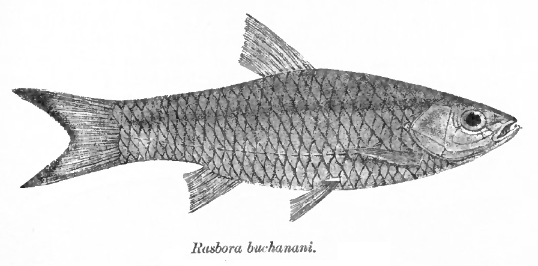
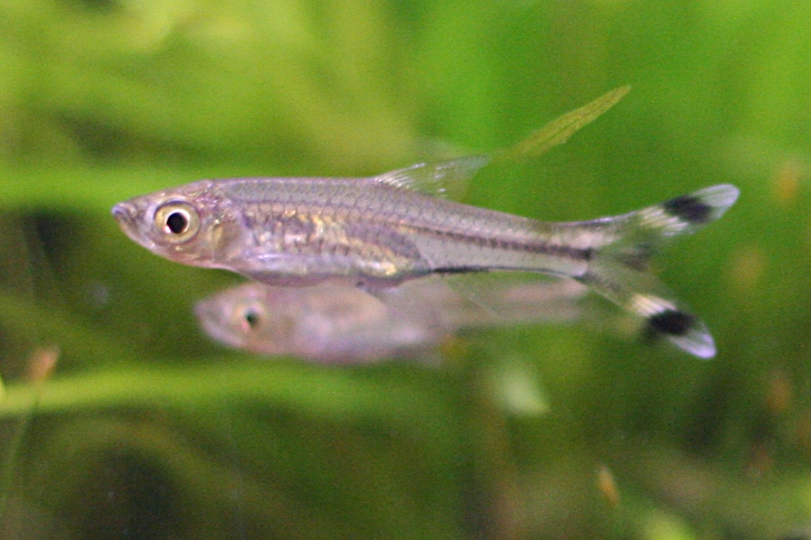

Scientific Classification
| Rank | Taxon |
|---|---|
| Kingdom | Animalia |
| Phylum | Chordata |
| Subphylum | Vertebrata |
| Class | Actinopterygii (ray-finned fishes) |
| Subclass | Neopterygii |
| Order | Cypriniformes |
| Suborder | Cyprinoidei |
| Family | Cyprinidae |
| Genus | Rasbora Bleeker, 1859 |
| Species | R. trilineata Steindachner, 1870 |
The genus Rasbora contains over 80 species distributed across South and Southeast Asia and Africa. Several species previously classified in Rasbora have been reassigned to the family Danionidae following recent molecular phylogenetic work, though R. trilineata is retained within Cyprinidae.[3]
Physical Profile
Size Range
| Measurement | Range |
|---|---|
| Total length (adults) | 8-15 cm |
| Body depth | Moderately laterally compressed; slender and streamlined |
| Sexual dimorphism | Females typically larger and deeper-bodied when gravid; males are more slender |
Identification Markings
- Body Coloration — Translucent silvery body with a faint golden sheen along the upper flanks; scales are clearly visible
- Lateral Stripe — A prominent dark horizontal stripe runs along the mid-body from behind the gill cover to the base of the caudal fin; secondary faint stripes may be present above and below
- Caudal (Tail) Fin — Deeply and symmetrically forked; each lobe bears a black bar at its base and a yellow to orange stripe beyond it, tipped with black; this pattern is the source of the scissortail common name[3]
- Other Fins — Dorsal, pectoral, pelvic, and anal fins are clear to faintly yellowish; no adipose fin is present
- Eyes — Relatively large; golden to silver iris
Habitat and Geography
Habitats
The scissortail rasbora inhabits a range of lotic (flowing) and lentic (still) freshwater environments across its native range. It is most commonly associated with clear, slow to moderately flowing water.[2]
- Slow to moderately flowing rivers and streams with sandy or gravelly substrates
- Floodplain pools and backwater channels connected to main river channels
- Clear blackwater streams with tannin-stained, acidic water (particularly in Borneo and Sumatra)
- Margins of larger rivers where vegetation provides shelter
- Occasionally found in forest streams shaded by dense riparian canopy
Distribution
The species is widely distributed across the freshwater systems of Sundaland and mainland Southeast Asia:[1]
- Thailand: present throughout the river systems of the Thai Peninsula and central Thailand
- Peninsular Malaysia: widespread in Pahang, Perak, Johor, and other states
- Borneo (Malaysia, Indonesia, Brunei): found in the major river systems including the Kapuas, Rajang, and Kinabatangan
- Sumatra, Indonesia: present in river systems throughout the island
Ecology and Behavior
Feeding and Diet
The scissortail rasbora is an omnivorous surface and mid-water feeder. In the wild it takes advantage of food falling onto or near the water surface as well as aquatic invertebrates drifting in the current.[2]
| Food Category | Examples |
|---|---|
| Small invertebrates | Aquatic insect larvae, flying insects that fall on the water surface, mosquito larvae, small worms |
| Zooplankton | Copepods, daphnia (water fleas), rotifers |
| Phytoplankton and algae | Consumed opportunistically, particularly by juveniles |
| Plant matter | Fallen seeds, fruit, and vegetation fragments near the water surface |
Behaviors and Adaptations
The scissortail rasbora is a highly active, schooling species. Schooling is the primary anti-predator strategy in this and many other small cyprinids.[3]
- Obligate schooling: Forms tightly coordinated groups; solitary individuals show increased stress behaviors and susceptibility to predation
- Mid-water positioning: Occupies the middle of the water column during active swimming; rises toward the surface to feed
- Synchronized turning: School members execute near-simultaneous turns in response to predator approach, a confusion effect that reduces individual predation risk
- Caudal fin display: The bold black and yellow tail markings may function as intra-school visual signals during rapid maneuvering, helping individuals maintain formation cohesion
- Crepuscular peak activity: Most active during dawn and dusk feeding periods; reduces activity during midday hours
Communication
Like all fish, the scissortail rasbora relies on multiple sensory channels for intraspecific communication and predator detection.[3]
- Lateral Line System — A mechanosensory organ running along each side of the body that detects pressure waves and water displacement; essential for maintaining school cohesion and detecting approaching predators before visual contact is made
- Visual Signals — The high-contrast black and yellow caudal fin pattern provides clear visual cues within the school; fin position and body orientation signal alarm and direction of movement
- Chemical Signals (Pheromones) — Alarm pheromones released by injured individuals trigger flight responses in nearby school members; reproductive pheromones facilitate mate recognition during spawning
- Sound — Cyprinids can produce low-frequency sounds via vibration of the swim bladder; these may play a role in short-range communication, though this is not well studied in R. trilineata specifically
Life History Cycle and Breeding Behaviors
The scissortail rasbora is an egg scatterer; it provides no parental care to eggs or offspring.[2]
- Sexual maturity: Reached at approximately 9-12 months of age and a body length of around 7 cm
- Spawning trigger: Rising water temperatures and increasing day length following the onset of the wet season trigger spawning behavior
- Courtship: Males chase and display to females; the male swims alongside and beneath the female while quivering his body
- Spawning site: Fine-leaved aquatic vegetation, submerged roots, or open sandy substrate
- Eggs: Adhesive, semi-transparent; scattered over vegetation or substrate in small batches; a single spawning event may produce 100-800 eggs depending on female size
- Hatching: Eggs hatch in 24-48 hours at tropical water temperatures (24-28 degrees Celsius)
- Larval stage: Larvae are free-swimming within 3-5 days of hatching and begin actively feeding on infusoria and microorganisms
- Juvenile development: Schooling behavior develops rapidly; juveniles join larger schools as soon as they are large enough
- Lifespan: Approximately 3-5 years in the wild; up to 8 years in optimal captive conditions
Predators
As a small fish, R. trilineata faces predation pressure from a wide range of aquatic and semi-aquatic predators throughout its life stages:[3]
- Piscivorous fish: Larger sympatric species including snakeheads (Channa spp.), Siamese tiger fish (Datnioides spp.), and large catfish
- Wading birds: Kingfishers (family Alcedinidae), herons, and egrets (family Ardeidae) take individuals near the water surface
- Semi-aquatic mammals: Oriental small-clawed otters (Aonyx cinereus) and smooth-coated otters (Lutrogale perspicillata) in the native range
- Egg and larval predators: Other fish, aquatic insects, and invertebrates; eggs and larvae face the highest mortality
Media and Supporting Visuals

Fig. 1. Rasbora trilineata scientific illustration, showing the characteristic lateral stripe and bicolored, forked caudal fin that gives the species its common name. Source: Wikimedia Commons / Duane Raver.

Fig. 2. A live Rasbora trilineata. The black and yellow caudal fin pattern is clearly visible; this pattern is thought to function as an intra-school visual signal. Photo: Wikimedia Commons.

Fig. 3. Clear lowland stream in Borneo with intact riparian forest, representative native habitat of Rasbora trilineata in the wild. Photo: New Scientist.
References
- Kottelat, M. (2019). Rasbora trilineata. IUCN Red List of Threatened Species 2019: e.T180969A1675016. IUCN, Gland, Switzerland. IUCN Red List
- Kottelat, M. (2013). The fishes of the inland waters of Southeast Asia: a catalogue and core bibliography of the fishes known to occur in freshwaters, mangroves and estuaries. Raffles Bulletin of Zoology, Supplement 27, 1-663. FishBase
- Seriously Fish (2024). Rasbora trilineata — Scissortail Rasbora. Seriously Fish Species Database. Seriously Fish